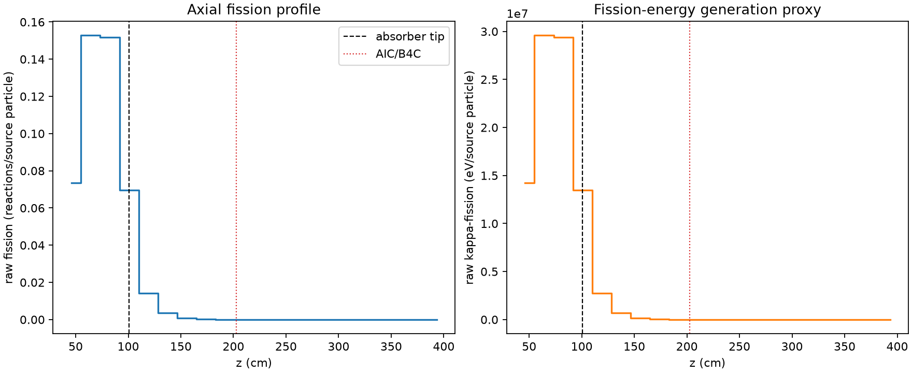
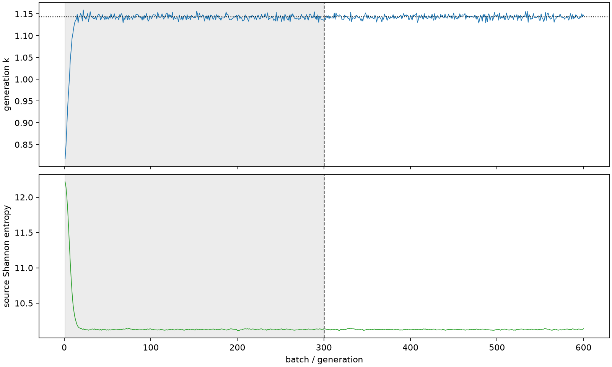

| field | value |
|---|---|
| experiment | V2-STAGE_256_OGRENCI_03-0014 |
| k | 1.1431546029509785 |
| MC standard error | 0.00018253547311881564 |
| seconds | 1211.348043541002 |
| acceptance | not_assessed |
| convergence | review_required |
Completed is output integrity only; physical and statistical review required. Zero tallies do not prove zero production or zero uncertainty.
| diagnostic | value |
|---|---|
| geometric fuel voxels | 5280 |
| zero fission tally voxels | 2092 |
| low signal fuel voxels | 2979 |
| low signal fission share | 7.05554054643005e-05 |
| low signal kappa share | 7.05939071330659e-05 |
| important fission share | 0.9500083661767575 |
| previous filter included | 2301 |
| duration estimate s | 1562.5173488400023 |
| actual minus estimate s | -351.16930529900037 |
| fission relative MC error | statistics |
|---|---|
| all_geometric_fuel | {"voxels": 5280, "positive_mean_voxels": 3188, "zero_mean_voxels": 2092, "undefined_relative_error_voxels": 2092, "median": 0.04580264431458496, "p95": 0.9718411347457155, "maximum": 1.0000000000000002} |
| low_signal | {"voxels": 2979, "positive_mean_voxels": 887, "zero_mean_voxels": 2092, "undefined_relative_error_voxels": 2092, "median": 0.562572744419539, "p95": 1.0, "maximum": 1.0000000000000002} |
| important_95pct | {"voxels": 1039, "positive_mean_voxels": 1039, "zero_mean_voxels": 0, "undefined_relative_error_voxels": 0, "median": 0.004935251217601798, "p95": 0.0064145169586967195, "maximum": 0.007342872886576751} |
| outside_previous_filter | {"voxels": 2979, "positive_mean_voxels": 887, "zero_mean_voxels": 2092, "undefined_relative_error_voxels": 2092, "median": 0.562572744419539, "p95": 1.0, "maximum": 1.0000000000000002} |
| kappa_fission relative MC error | statistics |
|---|---|
| all_geometric_fuel | {"voxels": 5280, "positive_mean_voxels": 3188, "zero_mean_voxels": 2092, "undefined_relative_error_voxels": 2092, "median": 0.04574977678207123, "p95": 0.9723561013073394, "maximum": 1.0000000000000002} |
| low_signal | {"voxels": 2979, "positive_mean_voxels": 887, "zero_mean_voxels": 2092, "undefined_relative_error_voxels": 2092, "median": 0.5625709812151065, "p95": 1.0, "maximum": 1.0000000000000002} |
| important_95pct | {"voxels": 1039, "positive_mean_voxels": 1039, "zero_mean_voxels": 0, "undefined_relative_error_voxels": 0, "median": 0.004929813708488008, "p95": 0.006406574113986596, "maximum": 0.00733422304527051} |
| outside_previous_filter | {"voxels": 2979, "positive_mean_voxels": 887, "zero_mean_voxels": 2092, "undefined_relative_error_voxels": 2092, "median": 0.5625709812151065, "p95": 1.0, "maximum": 1.0000000000000002} |
| axial bin | fission share | kappa-fission share |
|---|---|---|
| 1 | 0.15744172683138657 | 0.1574430606284742 |
| 2 | 0.32749399706972404 | 0.32748057694963645 |
| 3 | 0.3253106680333238 | 0.3252976735119632 |
| 4 | 0.14906037437649106 | 0.1490708105298869 |
| 5 | 0.03057439309973521 | 0.030585294064401778 |
| 6 | 0.007577530925910517 | 0.007580343086972092 |
| 7 | 0.0019068512633639504 | 0.001907516131236391 |
| 8 | 0.0004726315576104798 | 0.00047282328510074866 |
| 9 | 0.00012664329535002944 | 0.0001266926172590727 |
| 10 | 2.8237859251296397e-05 | 2.825679116351105e-05 |
| 11 | 5.942205130639282e-06 | 5.948158782895638e-06 |
| 12 | 7.394628756648367e-07 | 7.403515793227732e-07 |
| 13 | 2.640198466521775e-07 | 2.6389354330134293e-07 |
| 14 | 0.0 | 0.0 |
| 15 | 0.0 | 0.0 |
| 16 | 0.0 | 0.0 |
| 17 | 0.0 | 0.0 |
| 18 | 0.0 | 0.0 |
| 19 | 0.0 | 0.0 |
| 20 | 0.0 | 0.0 |
Histories include the inactive-to-active transition at batch 300. kappa-fission approximates fission energy production, not total heat deposition.

